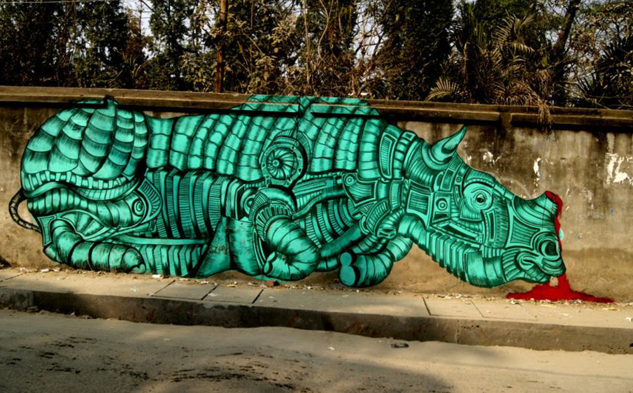
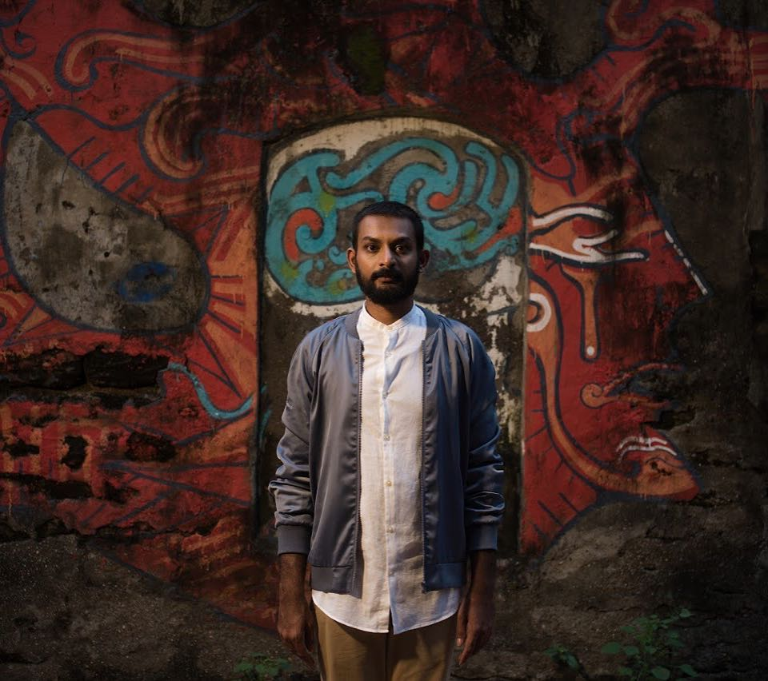
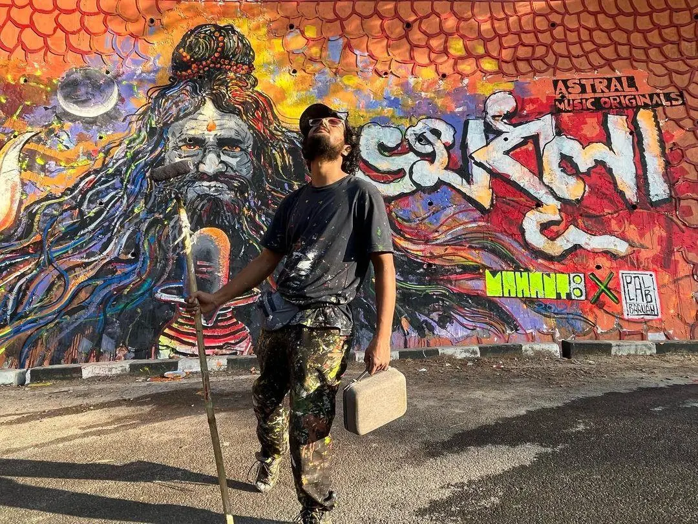
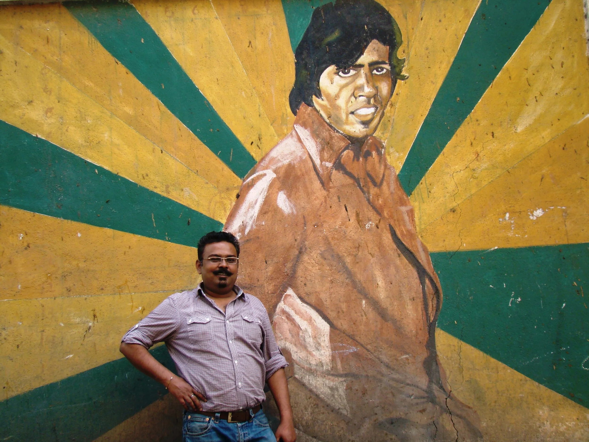

DAKU
DelhiDaku is one of India's most celebrated and mysterious street artists, working entirely anonymously. He uses Devanagari script as visual art — treating Hindi and Urdu words not just as language but as visual objects with their own aesthetic power. His work is deeply philosophical, often questioning consumerism, the passage of time, urban loneliness, and modern Indian identity. He has exhibited in India and internationally and is considered one of the most conceptually original artists working in public spaces anywhere in the world today.
Famous Works:
- Shadows, Lodhi Colony, Delhi — the word WAQT (time) is painted so it can only be read through its shadow at a specific time of day
- Har Baar — a series of minimalist Devanagari typography works across Delhi walls
- Multiple large installations at St+art India festivals

Yantr
Assam / DelhiYantr is a pioneering Indian street artist known for large-scale murals blending mechanical motifs with organic and socio-political narratives. His work transforms public walls into visual stories that combine industrial aesthetics with community-focused themes. Yantr has painted murals across Delhi, Mumbai, Pune, and Guwahati and is recognized as one of India’s most influential contemporary street artists.
Famous Works:
- Bio-Mechanical Murals — Large murals mixing machine-inspired forms with organic elements
- Mission Leopard Mural — Wildlife conservation themed mural on a water tank in Gurugram
- Shahpur Jat Street Murals — Multi-story building murals in Delhi’s urban village

Harshvardhan Kadam
Pune, MaharashtraHarshvardhan Kadam, also known as Inkbrushnme, is a Pune-based artist celebrated for his mythological and narrative murals across Indian cities. His works combine cultural storytelling, vibrant colors, and bold composition. He has created some of India’s largest murals, transforming public spaces into visually powerful urban canvases. Kadam’s studio, Inkbrushnme, bridges traditional Indian motifs with contemporary street art and illustration.
Famous Works:
- Songs of the City — Massive mural at Yerwada Central Jail, Pune
- MG Road Metro Murals — Public murals in Bengaluru
- Urban Mythology Series — Mythology-inspired street art across Indian cities

Neelim Mahanta
Lakhimpur, AssamNeelim Mahanta is a street artist and activist from Assam. He uses public walls to engage with culture, community, and social issues. Co-founder of the Living Art movement, Mahanta creates murals and graffiti projects that highlight local identity, social themes, and community participation. His works bring contemporary artistic expression to public spaces in North-East India.
Famous Works:
- #BleedWithDignity — A mural promoting menstrual hygiene awareness
- Dispur Flyover Murals — Commissioned murals across Assam
- Community-driven public murals — Living Art initiatives

Ranjit Dahiya
DelhiRanjit Dahiya brings the visual language of Indian comic books to large scale street murals. His work draws directly from the bold outlines, flat bright colours, and dramatic compositions of Amar Chitra Katha and Raj Comics — the iconic Indian comic book series that defined the childhood of generations. His murals are joyful, vibrant, and distinctly Indian in a way that sets him apart from artists influenced primarily by Western street art traditions.
Famous Works:
- Superhero and mythological murals across Delhi
- Works at Khirki Village art district, Delhi
- Illustrations for multiple public art projects